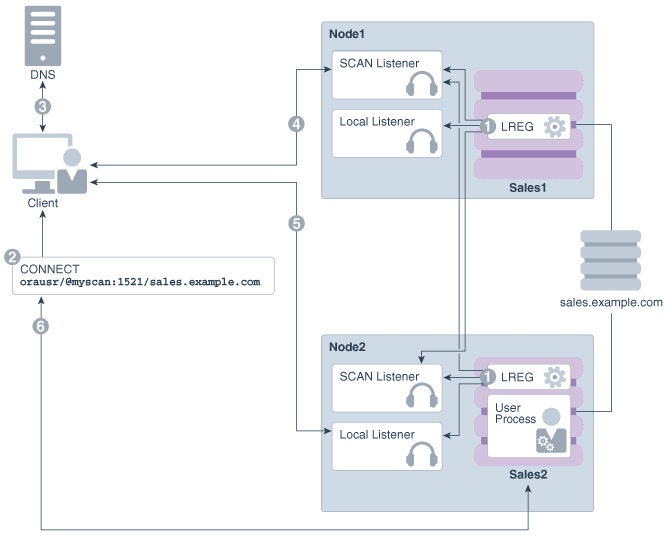

How Database Connections are Created When Using SCANs
Based on the environment, the following actions occur when you use a SCAN to connect to an Oracle RAC database using a service name.
The numbered actions correspond to the arrows shown in the figure displayed after the steps.
-
The LREG process of each instance registers the database services with the default listener on the local node and with each SCAN listener, which is specified by the
REMOTE_LISTENERdatabase parameter. The listeners are dynamically updated on the amount of work being handled by the instances and dispatchers. -
The client issues a database connection request using a connect descriptor of the form:
orausr/@scan_name:1521/webappNote:
If you use the Easy Connect naming method, then ensure that thesqlnet.orafile on the client containsEZCONNECTin the list of naming methods specified by theNAMES.DIRECTORY_PATHparameter. -
The client uses DNS to resolve scan_name. After DNS returns the three addresses assigned to the SCAN, the client sends a connect request to the first IP address. If the connect request fails, then the client attempts to connect using the next IP address.
-
When the connect request is successful, the client connects to a SCAN listener for the cluster that hosts the
salesdatabase and has an instance offering thewebappservice, which in this example issales1andsales2. The SCAN listener compares the workload of the instancessales1andsales2and the workload of the nodes on which they run. If the SCAN listener determines thatnode2is less loaded thannode1, then the SCAN listener selectsnode2and sends the address for the local listener on that node back to the client. -
The client connects to the local listener on
node2. The local listener starts a dedicated server process for the connection to the database. -
The client connects directly to the dedicated server process on
node2and accesses thesales2database instance.
Figure 6-1 Load Balancing Actions for Oracle RAC Connections That Use SCAN

Description of "Figure 6-1 Load Balancing Actions for Oracle RAC Connections That Use SCAN"